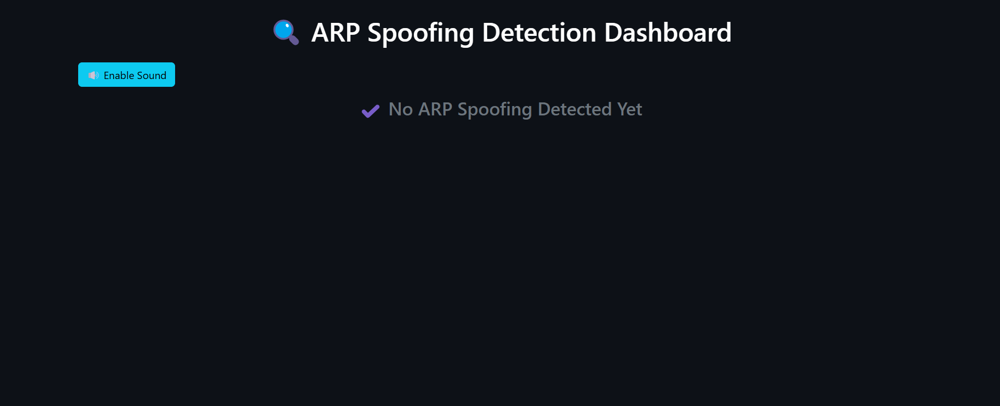
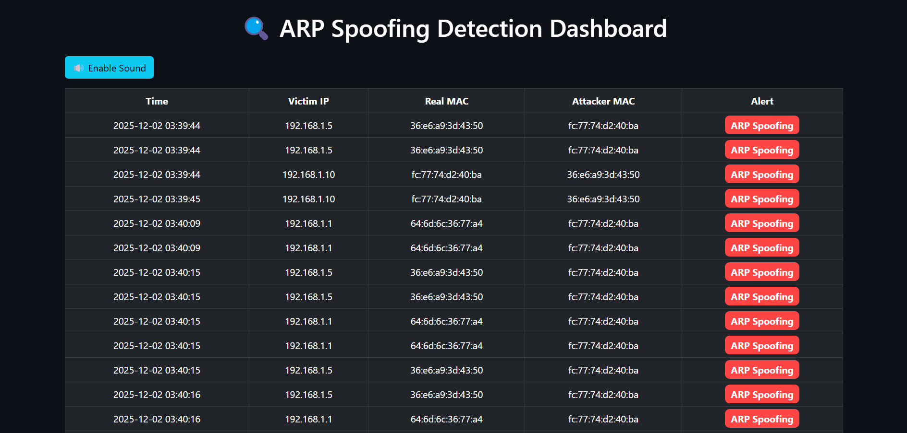

📡 ARP Spoofing Detection & Defense — التوثيق الكامل
📌 مقدمة عن المشروع
هذا المشروع يقوم بمراقبة شبكة الـ LAN واكتشاف هجمات ARP Spoofing / ARP Poisoning باستخدام مكتبات Python و Scapy.
عند اكتشاف أي محاولة هجوم، يتم تسجيل البيانات في ملف Log وعرضها في لوحة تحكم تفاعلية Dashboard مبنية باستخدام إطار العمل Flask.
يتم أيضًا تشغيل تنبيه صوتي وفلاش أحمر للتنبيه، بالإضافة إلى القدرة على إرسال ARP Packets صحيحة لإصلاح الـ ARP Table وحماية الأجهزة من التسميم.
🧩 مكونات المشروع
- 🟦 Python 3
- 🟨 Scapy لتحليل الـ Packets
- 🟩 Flask لإنشاء الـ Dashboard
- 🔊 تنبيه صوتي + فلاش
- 🛡 وضع الحماية (إرسال ARP صحيحة)
🔧 تشغيل المشروع
py arp_detector.py
py app.py # تشغيل لوحة التحكم📊 شكل الداشبورد
تعرض الداشبورد جميع الهجمات المكتشفة مع الوقت و MAC الحقيقي والمزور.
⚠️ شكل التحذير
عند اكتشاف هجوم، يتم:
🟥 تشغيل فلاش أحمر
🔊 تشغيل صوت alert.mp3
📌 إضافة الهجمة للجدول مباشرة
🛡 نظام الحماية (Defense Mode)
يتم إرسال ARP Packet صحيحة إلى جهاز الضحية لإعادة ضبط الـ ARP Table وحمايته من هجمات الـ MITM.
send(ARP(op=2, pdst=victim_ip, psrc=gateway, hwsrc=real_mac))🧪 خطوات اختبار الهجمة (Testing)
1️⃣ إعداد الأجهزة
- جهازك (الـ Dashboard + Detector)
- جهاز الضحية (Laptop / Phone)
- كالي لينكس داخل VM للهجوم
2️⃣ فحص الشبكة للحصول على IPs
nmap -sn 192.168.1.0/243️⃣ تنفيذ الهجوم من كالي
arpspoof -i eth0 -t VICTIM_IP GATEWAY_IP4️⃣ راقب نتائج الهجوم
ستظهر الهجمات مباشرة في لوحة التحكم، وسيتم تشغيل الصوت والفلاش وحفظ الهجمة في ملف Log.

📥 تحميل المشروع
يمكنك زيارة مشروع GitHub عبر الرابط التالي:
🔗 GitHub Repository